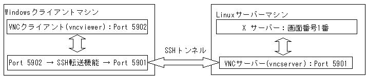
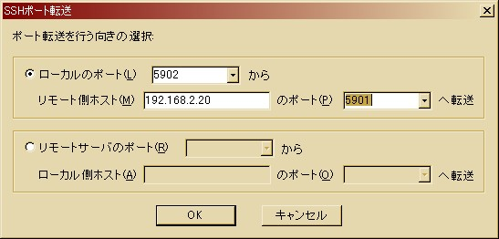
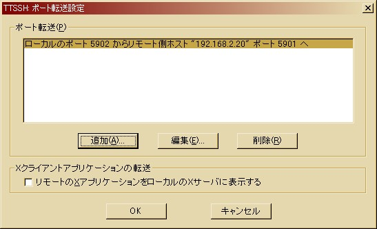
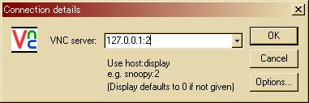
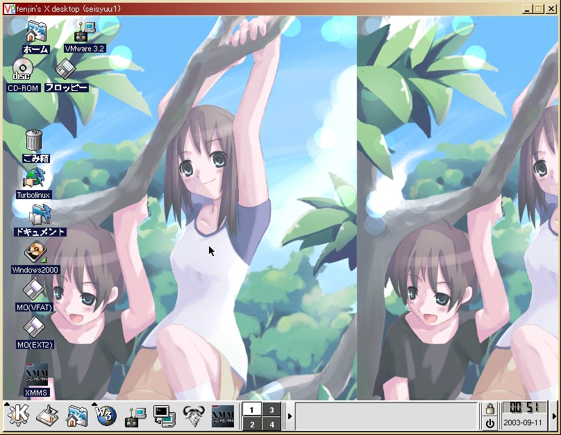

WindowsクライアントからSSH越しにVNCを使う
「本題」に戻る
今回はWindowsからだったらほぼ定番の、TeraTerm Pro とそれのSSH版である TTSSH を使ってSSH転送機能による VNC over SSH を試してみました。
TeraTerm Pro と TTSSH 及びその日本語化（兼諸問題フィクス）パッチの入手やインストール方法については、至る所で記述されているのでここではわざわざ述べません。入手だけならVectorで検索すれば問題ないと思います。
というわけで、TeraTerm Pro と TTSSH のインストールはすでに完了しているものとします。
まず、VNC over SSH の基本原理の説明を簡単に済ませましょう。SSHにはSSH転送機能（SSHポートフォワード）と呼ばれる機能があります。下の図を見てください。

このように、あるポート（上の図では5902番）を使ったやりとりを、SSH暗号化をかけた上で、別のポートへ転送する機能のことです。
SSH転送はクライアント側で実装すればよく、サーバー側（上の図ではvncserver側）では特に設定は入りません。
んで、ですね。ポート番号に注意していただきたいのです。
VNCではポート番号を基本的に、5900+ディスプレイ番号のポートを使用します。つまり、vncserverコマンドでもし「:1」とか返ってきたら、5900+1=5901番がVNCの使うポート番号になります。「:2」が返ってきたら5900+2=5902番になります。
ここでUNIX/Linux とWindows の差がちょこっとでます。vncserverを実行しているVNCサーバーがWindowsの場合、通常ディスプレイ番号が０番になるそうです。んで、UNIX/LinuxのVNCサーバーの場合、通常ディスプレイ番号が１番になります。
従って、（もしサーバー側でFireWallの関係で特殊なポート番号に指定しない限り）通常は Windowsサーバーなら 5900 番、UNIX/Linuxなら 5901 番がVNCの利用する通信ポートになります。
というわけで、TTSSHを使った VNC over SSH の設定を実際にやってみます。
まず、TTSSHを起動します。最初に接続先を求めるダイアログボックスが開かれますが、ここは一旦「キャンセル」ボタンをクリックします。「未接続」状態のTeraTermウインドウが表示されます。
続いて「設定」メニューの「SSH転送」というそのものズバリを選択します。「TTSSHポート転送設定」なるダイアログボックスが表示されますので、「追加」をクリックします。
「SSHポート転送」の設定ダイアログボックスが表示されます。ここで、下のようなポート転送設定をします。192.168.2.20が今回使用するVNCサーバーになります。

先ほど説明しましたとおり、実際にVNCサーバーと通信するポート番号が5901番になっている点にも注意してください。
追加したら、「TTSSHポート転送設定」ダイアログボックスはこんな風になりました。5902番が192.168.2.20宛の5901番に転送されるよう、設定されていることがわかります。「OK」ボタンをクリックします。

ではサーバー側でvncserverを実行します。UNIX/Linuxを使ったので、予想通り「:1」となり、ディスプレイ番号は1番。よってポート番号5901番になります。
いよいよクライアント側から接続してみます。vncviewerを実行します。接続先に注意してください。ポート転送を行うマシンはWindowsマシン自身ですから、IPアドレスは127.0.0.1、ポート番号は5902番ですから、逆算してディスプレイ番号は２番になります。

パスワードが聞かれてきますが、ここではvncserver側で登録したパスワードで大丈夫です。SSHのパスワード・パスフレーズとは無関係です。
もしポート番号・IPアドレス・ディスプレイ番号に間違いがなければ、無事ディスプレイが表示されるはずです。
間違って「192.168.2.20:1」などとすると、SSH転送機能を使わずにVNCサーバーにつながってしまいます。注意してください。SSH転送はあくまでも、クライアント側から明示的に用いなければ実行されません。サーバー側ではいつも通り、暗号化無しの 5901 番で接続を受け付けてくれています。（ではvncserverのパスワードが危険ではないか？という疑問が生じますが、どうやら乱数を使って毎度毎度何らかの暗号化を施してからパスワードをやりとりしているようなので、そこは安心して良いかもしれません。問題は認証終了後だということです。）
これで Windowsクライアントを利用した VNC over SSH の使用方法は一旦おしまい。UNIX/Linuxクライアントの場合は OpenSSH でも入れて、「ssh -L 5902:localhost:5901 vncserver」とでも打ち込めば大丈夫みたいです。
VNCのウインドウサイズを変更してみる
「本題」に戻る
vncserverはデフォルトでXGA, 1024x768の大きさでXを起動します。
ところが、もしもクライアント側もXGAだった場合、VNC画面の脇にスクロールバーが表示されてしまうんですよねえ。「全画面表示」とかいう機能もなさそうですし。
というわけで、せめて SVGA 800x600 の大きさでXを起動させたいものです。
$ vncserver -geometry 800x600以上。
VNCのウインドウマネージャを変更してみる
「本題」に戻る
いつまでも twm を使いたくはありません。いや、twmが駄目だと言っているわけではないのです。fvwmやblackboxやKDEなどを使えるなら、素直にそちらを使おうじゃないか・・・という話です。
これも非常に簡単でした。
vncserverがXを起動した後に実行するスクリプト、すなわち通常のXで言うところの「.xinitrc」ファイルは‾/.vnc/xstartupスクリプトです。
結局、‾/.xinitrc を ‾/.vnc/xstartup へコピーしてしまえば良いわけです。
実行結果です。フォント情報は崩れてしまいますが、KDEでもほぼ実用に耐えうる画面です。お好みにより、vncserverの時だけblackboxやfvwmなど軽めのWMを実行するようにすればまた楽しみも増えるでしょう。元の.xinitrcが良くできているおかげで、日本語入力もATOKXなりCannaなりを使って利用できます。（さすがに商用のXのように、Windows上のIMEからそのまま入力というわけにはいきませんが・・・）

ちなみに背景画像は十四羊交差点の暑中見舞い画像より頂きました。